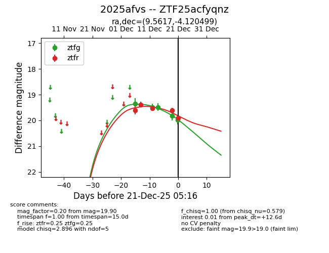
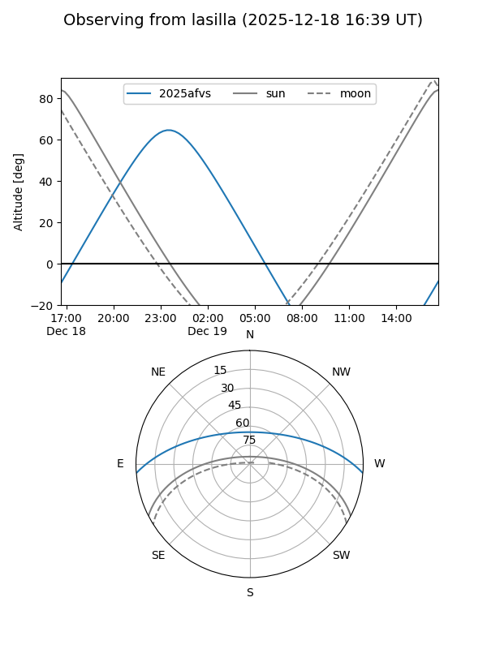
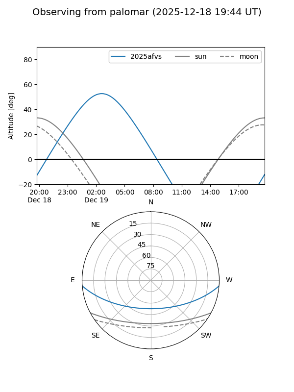

2025afvs
Target 2025afvs at 2025-12-18 11:17
Aliases and brokers:
FINK: fink-portal.org/ZTF25acfyqnz
Lasair: lasair-ztf.lsst.ac.uk/objects/ZTF25acfyqnz
ALeRCE: alerce.online/object/ZTF25acfyqnz
TNS: wis-tns.org/object/2025afvs
YSE: ziggy.ucolick.org/yse/transient_detail/2025afvs
alt names
ZTF25acfyqnz (ztf,fink_ztf)
2025afvs (tns,yse)
Coordinates:
equatorial (ra, dec) = 9.5617,-4.12050
equatorial (HMS+DMS) = 00:38:14.82,-04:07:13.80
galactic (l, b) = (114.5649,-66.77771)
Photometry
last ztfg=19.48, ztfr=19.52
3 ztfg, 3 ztfr detections
Lightcurve

Visibility


Additional plots